Last Updated: 2025-12-08
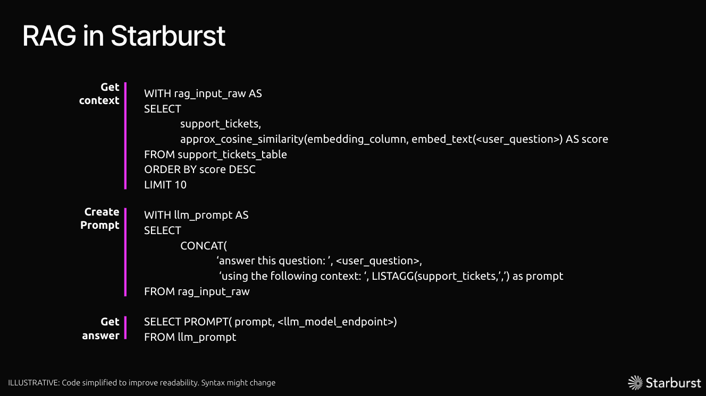
This Utilizing SQL-based AI functions with Starburst tutorial assumes you are conceptually familiar with LLMs, vector embeddings, and RAG. The following video is an appropriate primer for this tutorial.
In this tutorial, you will learn by example how Starburst integrates with popular AI models to leverage the power of LLMs with SQL. You will learn a variety of specialized tasks and implement the RAG pattern. You will use Starburst Galaxy as the environment for this exploration.
Once you've completed this tutorial, you will be able to:
As an option, you can watch a video version of this tutorial.
Log into your Starburst Galaxy environment with the following configuration.
Navigate to Query > Query editor from the left nav, open a new editor tab, name it AI functions, and choose the aws-us-east-1-free cluster from the first pulldown menu.
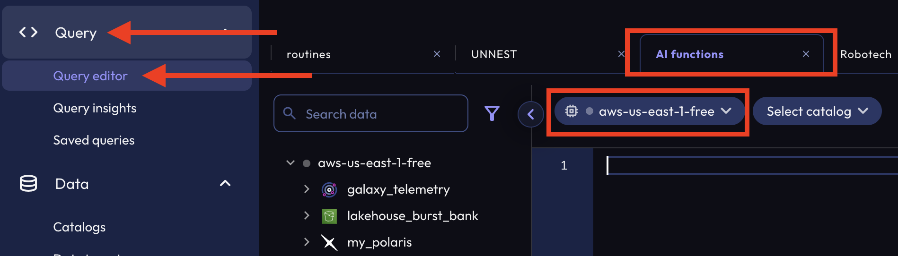
Run the following SQL to create, and set the editor to use, a new schema.
CREATE schema tmp_cat.ai_functions;
USE tmp_cat.ai_functions;Notice the final pulldown shows the ai_functions schema is selected which will allow us to reference tables without the fully qualified catalog_name.schema_name prefix.
Select AI models from the left nav and then click on Connect to an external model.
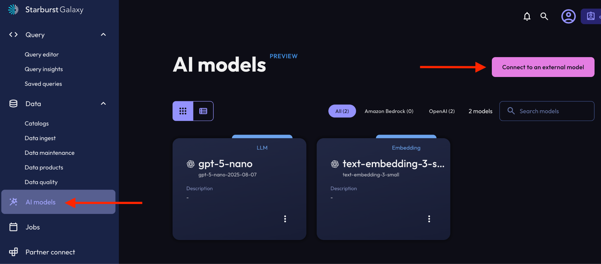
This presents a simple input form.
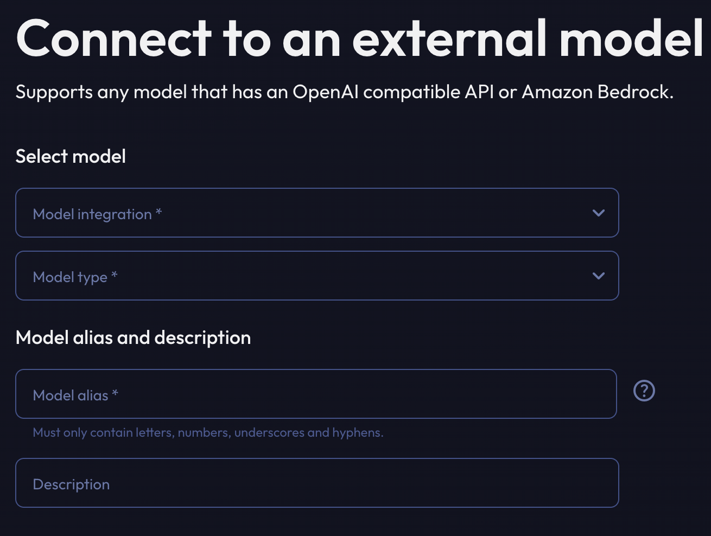
Select Open AI & Open AI API Compatible for Model integration and Embedding for Model type. For Model ID enter a valid model such as text-embedding-3-small.
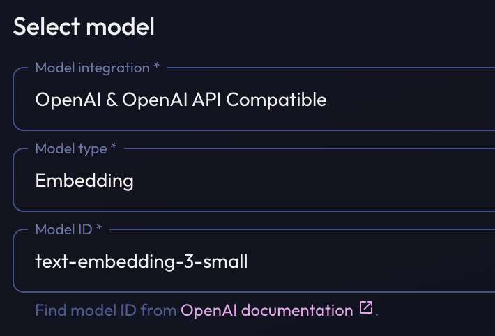
Set the Model alias to ai_functions_embeding and optionally add a Description.
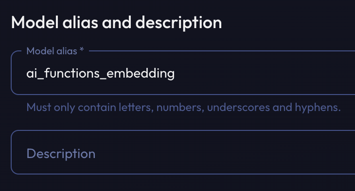
Leave the OpenAI endpoint to its default value and enter your OpenAI API key value.
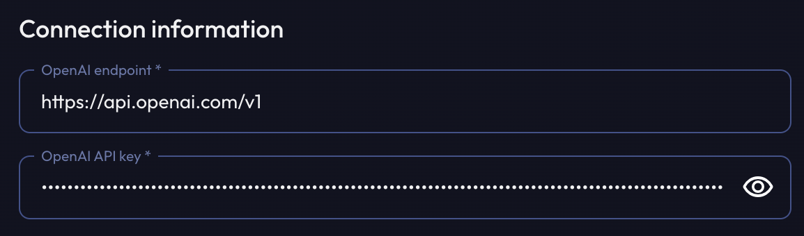
Press the Test connection button at the lower right of the configuration screen to see the following confirmation message.
Press the Create button to then see the newly created model in the AI models list.
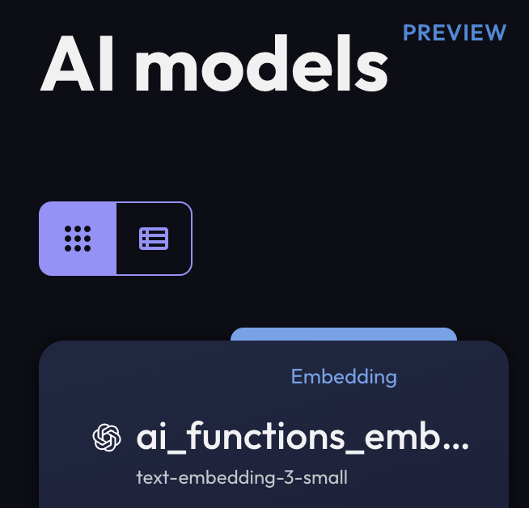
Using the Connect to an external model button again, then select Open AI & Open AI API Compatible for Model integration and LLM for Model type. For Model ID enter a valid model such as gpt-5-nano-2025-08-07. Enter ai_functions_gpt5 for the Model alias and paste in your OpenAI API key value.
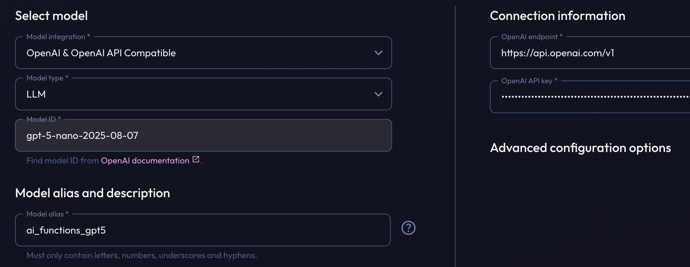
Press the Test connection button and after the confirmation message is presented, press the Create button to then see the newly created model in the AI models list.
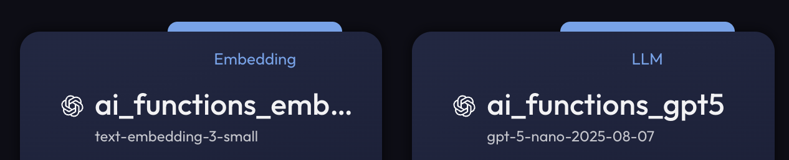
As you can see from Starburst | AI functions the functions are broken into 3 categories.
prompt() and it does what it sounds like; you can send in an input prompt and get a response back from an LLM (think ChatGPT) with the answer.Let's ask a very important question.
SELECT starburst.ai.prompt(
'What underlying tech does Starburst use?',
'ai_functions_gpt5');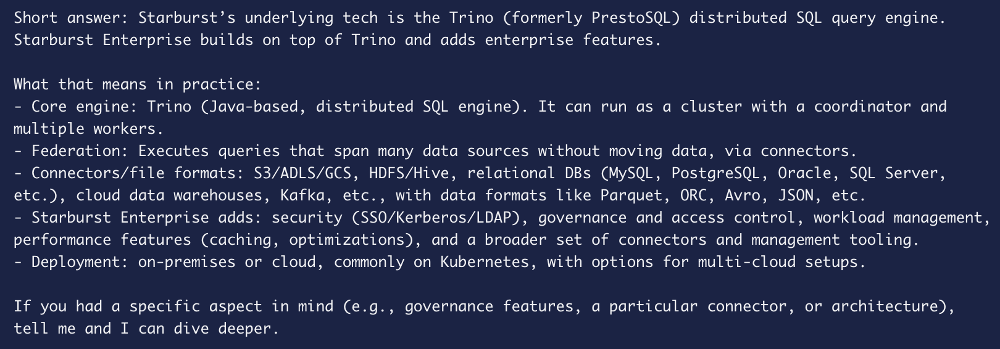
Since Trino / Starburst users are familiar with SQL and possibly haven't seen themselves as ‘prompt engineers', a library of built-in, pre-tested functions was created that work with any configured LLM. Let's explore them.
Verify a very obvious positive statement.
SELECT starburst.ai.analyze_sentiment(
'I love Starburst',
'ai_functions_gpt5');Let's be a bit more wordy to make sure it is doing a good job.
SELECT starburst.ai.analyze_sentiment(
'Trino/Presto/Athena whatever the branding is, is the most impressive data processing technology I have seen in my career. The only downside is that SQL is its only interface, but honestly I love it so much. I have been lucky enough to meet some of engineers that worked on it and they are some of the best engineers I have met in my career. If I was going to a Greenfield project, I would 100% want this as the main part of our stack.',
'ai_functions_gpt5');If this was sent to me in email would my spam detector flag it?
SELECT starburst.ai.classify(
'Trino/Presto/Athena whatever the branding is, is the most impressive data processing technology I have seen in my career. The only downside is that SQL is its only interface, but honestly I love it so much. I have been lucky enough to meet some of engineers that worked on it and they are some of the best engineers I have met in my career. If I was going to a Greenfield project, I would 100% want this as the main part of our stack.',
ARRAY['spam', 'not spam'],
'ai_functions_gpt5');You can try other classifications and number of options. What does the LLM think about the verbosity of this writer?
SELECT starburst.ai.classify(
'Trino/Presto/Athena whatever the branding is, is the most impressive data processing technology I have seen in my career. The only downside is that SQL is its only interface, but honestly I love it so much. I have been lucky enough to meet some of engineers that worked on it and they are some of the best engineers I have met in my career. If I was going to a Greenfield project, I would 100% want this as the main part of our stack.',
ARRAY['cursory', 'average', 'exhaustive'],
'ai_functions_gpt5');Image a column with some free form text that you might want to clean up a bit.
SELECT starburst.ai.fix_grammar(
'Trino/Presto/Athena whatever the branding is, is the most impressive data processing technology I have seen in my career. The only downside is that SQL is its only interface, but honestly I love it so much. I have been lucky enough to meet some of engineers that worked on it and they are some of the best engineers I have met in my career. If I was going to a Greenfield project, I would 100% want this as the main part of our stack.',
'ai_functions_gpt5');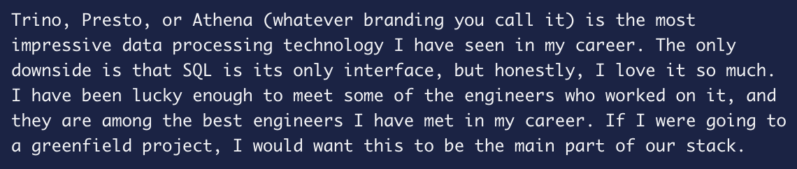
Convert the text to Chinese as used in Taiwan.
SELECT starburst.ai.translate(
'Trino/Presto/Athena whatever the branding is, is the most impressive data processing technology I have seen in my career. The only downside is that SQL is its only interface, but honestly I love it so much. I have been lucky enough to meet some of engineers that worked on it and they are some of the best engineers I have met in my career. If I was going to a Greenfield project, I would 100% want this as the main part of our stack.',
'zh-TW', 'ai_functions_gpt5');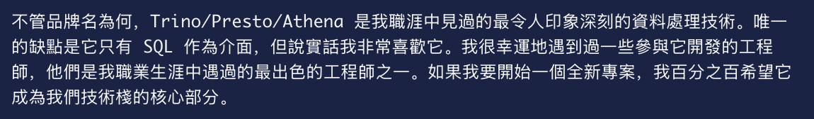
You could even chain functions together to do something like correcting the grammar from the source text and then converting that to Spanish.
SELECT starburst.ai.translate(starburst.ai.fix_grammar(
'Trino/Presto/Athena whatever the branding is, is the most impressive data processing technology I have seen in my career. The only downside is that SQL is its only interface, but honestly I love it so much. I have been lucky enough to meet some of engineers that worked on it and they are some of the best engineers I have met in my career. If I was going to a Greenfield project, I would 100% want this as the main part of our stack.',
'ai_functions_gpt5'), 'es', 'ai_functions_gpt5');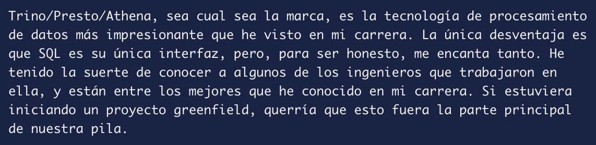
As this would likely call the LLM twice, you would almost certainly have faster performance with less cost by customizing the prompt directly. Here's one simple ‘prompt engineering' approach.
SELECT starburst.ai.prompt(concat(
'Correct the grammar and spelling in the following text, and then translate the corrected text into Spanish. Here is the text: ',
'Trino/Presto/Athena whatever the branding is, is the most impressive data processing technology I have seen in my career. The only downside is that SQL is its only interface, but honestly I love it so much. I have been lucky enough to meet some of engineers that worked on it and they are some of the best engineers I have met in my career. If I was going to a Greenfield project, I would 100% want this as the main part of our stack.'),
'ai_functions_gpt5');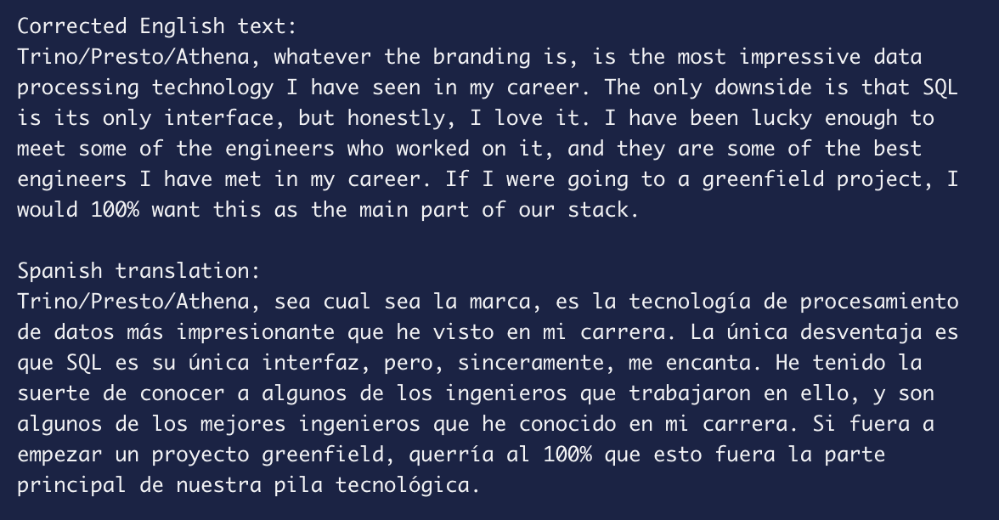
Starburst's built-in access controls already include the ability to define column masks, but this is only useful on structured data. The AI functions come to the rescue when you need to apply masks to data in free-form text.
Let's try it with some text containing an address and phone number.
SELECT starburst.ai.mask(
'Contact me at 555-1234 or visit us at 123 Main St.',
ARRAY['phone', 'address'],
'ai_functions_gpt5');Imagine if you will that the cartoon character Fred Flintstone was keeping a personal diary.
If we asked things of a public LLM about Fred's interests or experiences that are only in this diary, we will not get an accurate answer. For example, I happen to know Fred, like me, is an active Postcrossing member and sends/receives postcards all over the world.
Let's see what happens if we ask an LLM if he likes "snail mail".
SELECT starburst.ai.prompt(
'Does Fred Flintstone like to send and receive mail?',
'ai_functions_gpt5');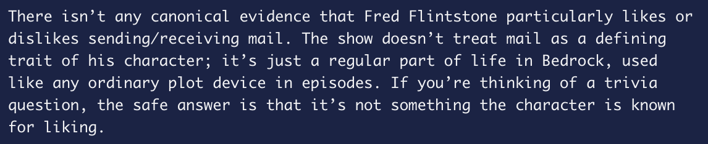
It doesn't seem that the LLM knows about Fred's personal thoughts on the matter.
Fred uses his stone-aged mobile device (hey, he's a fictional character so why not give him cellular service and internet access!) to record his journal entries. The good news for this tutorial is that we can just pick up at the point where there is an Apache Iceberg table that holds all the entries (was there an ice-age in the middle of the stone-age?).
-- create a table for diary entries
CREATE TABLE diary_entries (
owner varchar,
entry_date timestamp,
entry_text varchar
);
show create table diary_entries;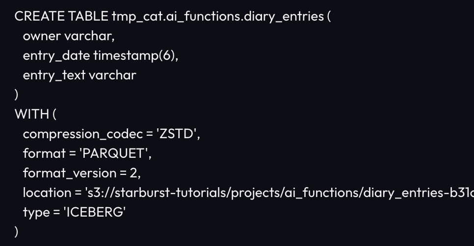
Let's populate the table with some sample journal entries that we can use for testing.
-- add initial entries
INSERT INTO diary_entries (owner, entry_date, entry_text)
VALUES
('Fred Flintstone', date_add('day', -99, current_timestamp), 'It is a new year and today I decided to start keeping a diary. Some may imagine that life is pretty boring here in Bedrock, but my family and friends make sure life is NEVER boring! As today is a Monday, I''m off to work at the quarry. I work there everyday until 5pm. Despite it being physical work, I do enjoy it. I was happy to play with Dino after work.'),
('Fred Flintstone', date_add('day', -98, current_timestamp), 'Ok, keeping a diary is something I''ll need to get used to. It seems I missed yesterday, but I''m still here. It is mid-week and I''m finally jotting down my notes this Wednesday evening. Barney and I just got back from our Loyal Order of Water Buffaloes meeting. Barney is running for Vice President this year and I fully support him.'),
('Fred Flintstone', date_add('day', -97, current_timestamp), 'Ahh... the weekend is finally here. I''ve been so busy (and well... I guess I simply forgot as well) to enter my thoughts into my daily journal. Off to the drive in movie tonight.'),
('Fred Flintstone', date_add('day', -96, current_timestamp), 'The weekends always go so fast. Family & friends continue to be the thing I spend my time on. I''m thinking I need a new hobby, too.'),
('Fred Flintstone', date_add('day', -95, current_timestamp), 'I have decided to try sending & receiving postcards as a new hobby. I found this website called Postcrossings that looks pretty interesting. The site says that over 800,000 people enjoy this hobby. Postcrossers, that''s what these hobbyists are called, have sent over 78 million postcards so far.'),
('Fred Flintstone', date_add('day', -94, current_timestamp), 'I was able to send 3 postcards today to people the system provided addresses to me for. This really is the hobby for me.'),
('Fred Flintstone', date_add('day', -93, current_timestamp), 'Fun Thursday night getting 2 more postcards in the mail. I am loving this hobby even though Wilma thinks I''m nuts.'),
('Fred Flintstone', date_add('day', -92, current_timestamp), 'I went hiking over the weekend for one of my existing hobbies; waterfall viewing. I saw two of the largest ones in Bedrock; Big Falls and Prettybig Falls. I was even able to buy a few postcards at the gift shop.'),
('Fred Flintstone', date_add('day', -91, current_timestamp), 'I had so much fun looking at waterfalls that I visited the artificial one we have at the mall; Shopping Shoal. Silly name, but I did find out that shoals were usually rocks in rough water that paddlers enjoy traversing through.'),
('Fred Flintstone', date_add('day', -90, current_timestamp), 'This was a second journal entry for Jan 15. It shows some extra spacing that can be cleaned up.'),
('Fred Flintstone', date_add('day', -89, current_timestamp), 'Woke up, fell out of bed. Dragged a comb across my head. Found my way downstairs and drank a cup and looking up, I noticed I was late. Found my coat and grabbed my hat. Made the bus in seconds flat. Found my way upstairs and had a smoke and somebody spoke and I went into a dream.'),
('Fred Flintstone', date_add('day', -88, current_timestamp), 'Woke up, fell out of bed. Dragged a comb across my head. Found my way downstairs and drank a cup and looking up, I noticed I was late. Found my coat and grabbed my hat. Made the bus in seconds flat. Found my way upstairs and had a smoke and somebody spoke and I went into a dream.'),
('Fred Flintstone', date_add('day', -87, current_timestamp), 'These last days have been a complete blur. So busy just life that I haven''t been able to focus on my new hobby of mailing postcards.');
select * from diary_entries;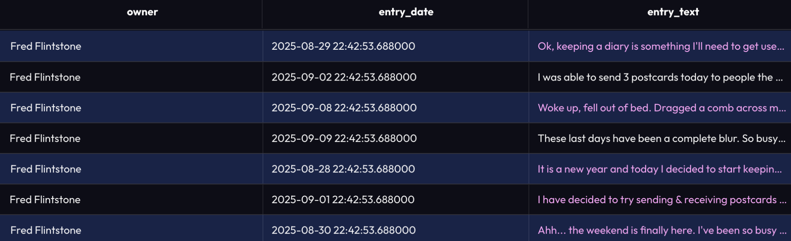
A large component of many comprehensive RAG applications is the ETL pipeline that prepares data to be retrieved that can be then used to augment an LLM prompt. As unstructured docs in ai (the wild west) points out, these pipelines can get rather complicated, rather quickly, depending on the input data.
Fortunately, our simple use case didn't need to parse any unstructured data and the values in the entry_text column are appropriately chunked for the RAG workflow we are going to build. We just need to create vector embeddings of these journal entries and persist them somewhere.
If you are confused about any of the RAG terminology used above, please watch the following video.
We need a place to store the vector embeddings. You could always use a purpose-built vector database, but for this tutorial we will store them "lakeside". This means as a column in our Iceberg table. Let's add a column for them to be persisted.
-- prep to store vector embeddings
-- 'lakeside' right in the Iceberg table
ALTER TABLE diary_entries
ADD COLUMN entry_text_embeddings array(double);Now we can leverage generate_embeddings() to create the vector embeddings and then just store them into the new column.
-- create and persist the embeddings
UPDATE diary_entries
SET entry_text_embeddings =
starburst.ai.generate_embedding(
entry_text, 'ai_functions_embedding'
)
WHERE entry_text_embeddings IS NULL;
select * from diary_entries;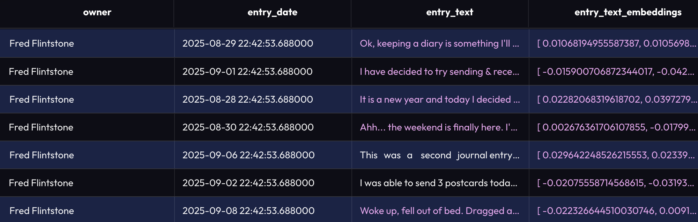
Taking a deeper look into one of the entry_text_embeddings column's values, you'll notice this is just a very long array of numbers ranging from -1 to 1. Again, the video at the top of this step attempts to give a very high-level understanding of what these are representing.
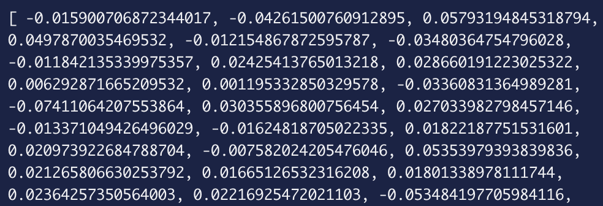
In a nutshell, this array of values from -1 to 1 is a multi-dimensional mathematical representation of the contents in the corresponding entry_text column for each row. These can be used in our RAG workflow in the next step when trying to find chunks of text (journal entries in our case) that are similar to a request that will be asked about Fred Flintstone.
It is worth noticing 2 cool things we just did.
Now that we have our data prepared, we can focus on the SQL-based RAG workflow we are interested in.
RAG starts with "R" so let's see if we can use Starburst's AI functions to RETRIEVE journal entries that align with the earlier use case description.
-- Retrieve the top 5 most relevant journal
-- entries based on semantic similarity
WITH vector_search AS(
SELECT
owner, entry_date, entry_text,
cosine_similarity(
starburst.ai.generate_embedding(
'Does Fred Flintstone like to send and receive mail?',
'ai_functions_embedding'
),
entry_text_embeddings
) AS similarity_score
FROM diary_entries
ORDER BY similarity_score DESC
LIMIT 5
)
SELECT * FROM vector_search;Notice that the entry_text values below with the highest similarity_score values reference postcards. Our question didn't mention postcards specifically, but that's the power of similarity searching based on embeddings, not just a simple LIKE operator. The cosine_similarity() function already existed in Trino.
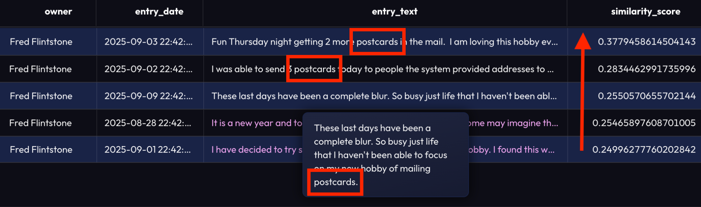
Let's get ready for the AUGMENTATION bit of RAG by preparing the journal entries into a JSON collection that the LLM will more easily consume. We are just creating a second Common Table Expression (CTE) that leverages some more existing Trino functions.
-- Retrieve the top 5 most relevant journal
-- entries based on semantic similarity
WITH vector_search AS(
SELECT
owner, entry_date, entry_text,
cosine_similarity(
starburst.ai.generate_embedding(
'Does Fred Flintstone like to send and receive mail?',
'ai_functions_embedding'
),
entry_text_embeddings
) AS similarity_score
FROM diary_entries
ORDER BY similarity_score DESC
LIMIT 5
),
-- Augment the results by converting
-- them into a JSON object
json_results AS (
SELECT CAST(map_agg(to_iso8601(entry_date), json_object(
key 'journal entry date' VALUE entry_date,
key 'journal entry text' VALUE entry_text)) AS JSON) AS json_data
FROM
vector_search
)
SELECT * FROM json_results;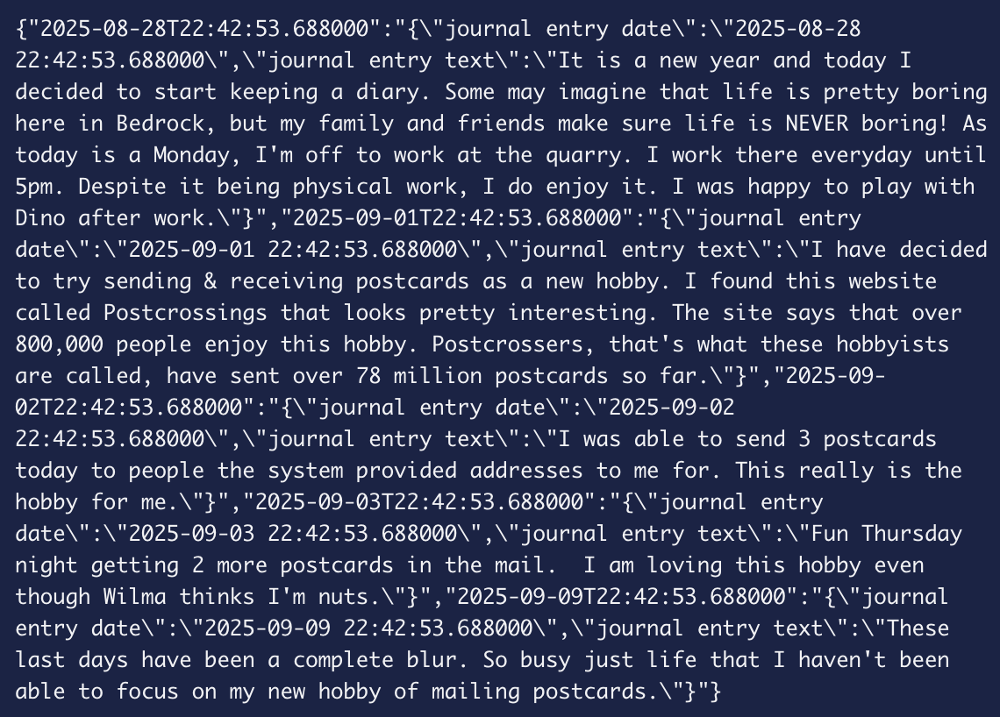
That looks like a bunch of gobbledygook, but if you format it in your favorite editor it looks a bit more understandable.
{
"2025-08-28T22:42:53.688000": "{\"journal entry date\":\"2025-08-28 22:42:53.688000\",\"journal entry text\":\"It is a new year and today I decided to start keeping a diary. Some may imagine that life is pretty boring here in Bedrock, but my family and friends make sure life is NEVER boring! As today is a Monday, I'm off to work at the quarry. I work there everyday until 5pm. Despite it being physical work, I do enjoy it. I was happy to play with Dino after work.\"}",
"2025-09-01T22:42:53.688000": "{\"journal entry date\":\"2025-09-01 22:42:53.688000\",\"journal entry text\":\"I have decided to try sending & receiving postcards as a new hobby. I found this website called Postcrossings that looks pretty interesting. The site says that over 800,000 people enjoy this hobby. Postcrossers, that's what these hobbyists are called, have sent over 78 million postcards so far.\"}",
"2025-09-02T22:42:53.688000": "{\"journal entry date\":\"2025-09-02 22:42:53.688000\",\"journal entry text\":\"I was able to send 3 postcards today to people the system provided addresses to me for. This really is the hobby for me.\"}",
"2025-09-03T22:42:53.688000": "{\"journal entry date\":\"2025-09-03 22:42:53.688000\",\"journal entry text\":\"Fun Thursday night getting 2 more postcards in the mail. I am loving this hobby even though Wilma thinks I'm nuts.\"}",
"2025-09-09T22:42:53.688000": "{\"journal entry date\":\"2025-09-09 22:42:53.688000\",\"journal entry text\":\"These last days have been a complete blur. So busy just life that I haven't been able to focus on my new hobby of mailing postcards.\"}"
}Finally, you can use the json_results CTE generated from the last step to AUGMENT our prompt() function call to GENERATE a more appropriate answer.
-- Retrieve the top 5 most relevant journal
-- entries based on semantic similarity
WITH vector_search AS(
SELECT
owner, entry_date, entry_text,
cosine_similarity(
starburst.ai.generate_embedding(
'Does Fred Flintstone like to send and receive mail?',
'ai_functions_embedding'
),
entry_text_embeddings
) AS similarity_score
FROM diary_entries
ORDER BY similarity_score DESC
LIMIT 5
),
-- Augment the results by converting
-- them into a JSON object
json_results AS (
SELECT CAST(map_agg(to_iso8601(entry_date), json_object(
key 'journal entry date' VALUE entry_date,
key 'journal entry text' VALUE entry_text)) AS JSON) AS json_data
FROM
vector_search
)
-- Generate an augmented response
-- using the LLM
SELECT
starburst.ai.prompt(concat(
'Using the list of journal entries provided in JSON, ',
'Does Fred Flintstone like to send and receive mail?',
json_format(json_data)), 'ai_functions_gpt5')
FROM json_results;Check out the results this time!!
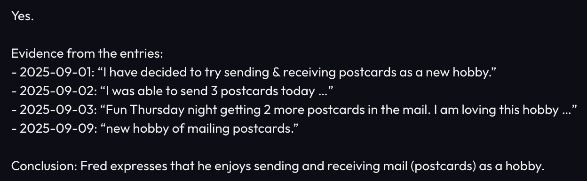
I thought he did!
Let's try asking some more questions with the simple SELECT statement leveraging prompt() as well as the more lengthy RAG workflow statement using CTEs.
How does Fred Flintstone feel about public transportation?
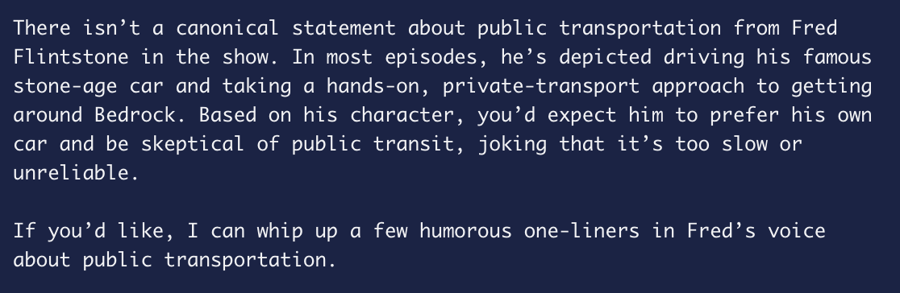
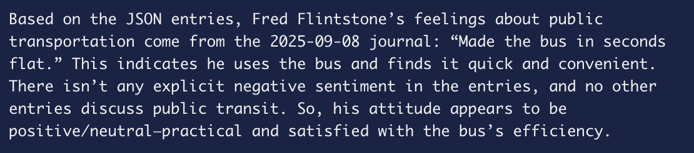
What hobbies or activities is Fred Flintstone interested in?
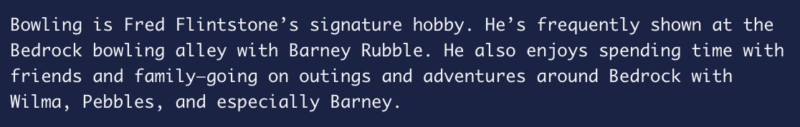
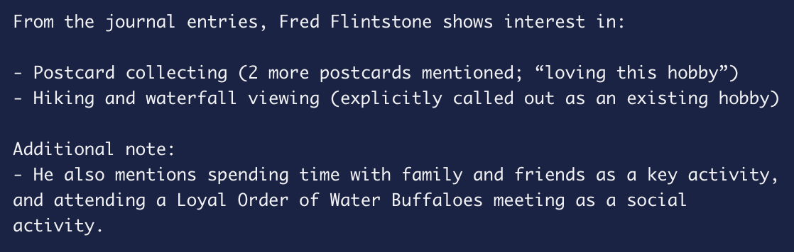
Better prompt engineering would merge these answers together in the RAG response.
How often does Fred Flintstone go to the movies?
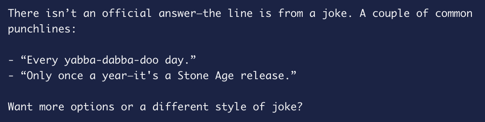
It is kind of funny that the animated theme song does show him going to the movies!
It is fair to say that even with this very primitive RAG workflow (again, written using SQL!), the responses are better after being augmented with non-public information.
Run the following SQL to remove the schema and all the objects within it. This will also clear up the object store files that were created during this tutorial.
DROP SCHEMA ai_functions CASCADE;Click on Admin > Clusters from the left nav.
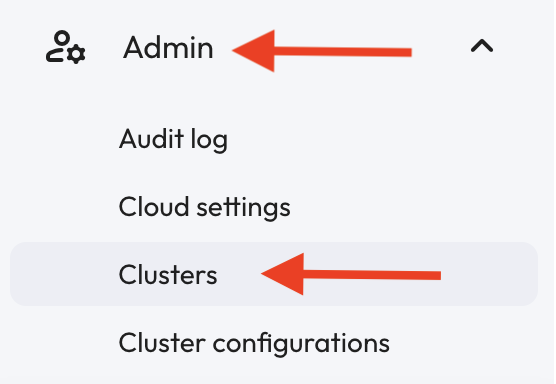
Find the aws-us-east-1-free cluster in the presented list and click on the vertical ellipsis menu icon on the far right of this row. In the menu that surfaces, click on Edit cluster.
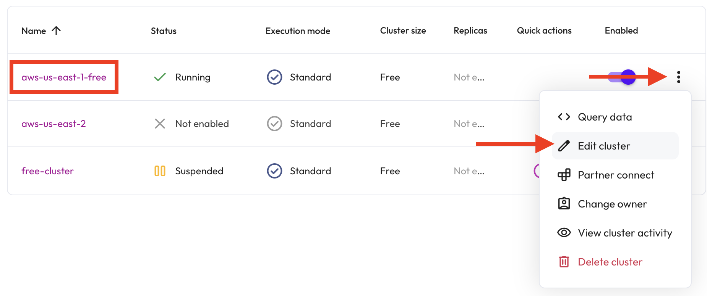
In the Edit cluster configuration screen, click on the Catalogs pulldown menu.
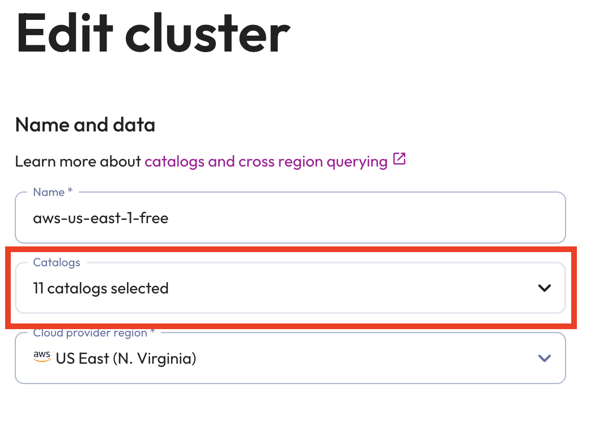
Uncheck the box on the for the tmp_cat (us-east-1) item in the list that surfaces, then click on Save changes.
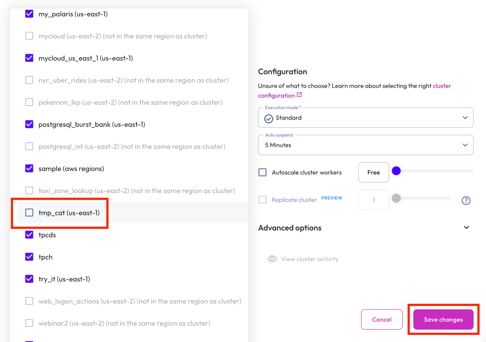
Navigate to Data > Catalogs from the left nav to see the list of Catalogs. Type tmp_cat in the search box to trim the list to only this catalog. Click on the cluster name link.
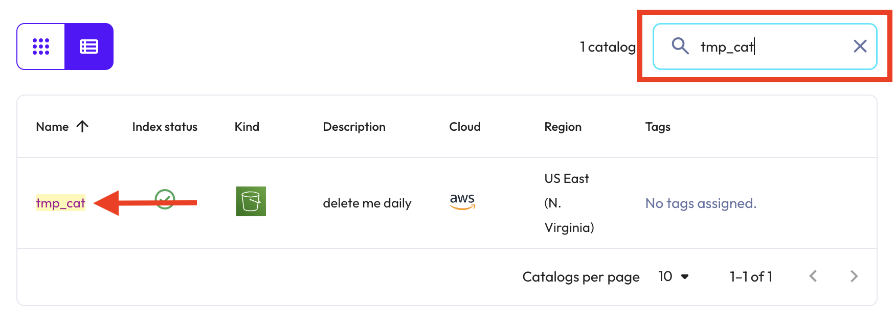
Click on the vertical ellipsis menu icon and choose Delete catalog.
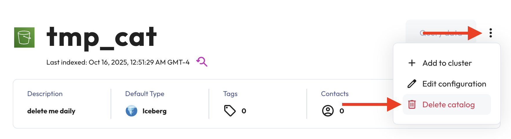
Follow the on-screen instructions to enable, and click, the Yes, delete button.
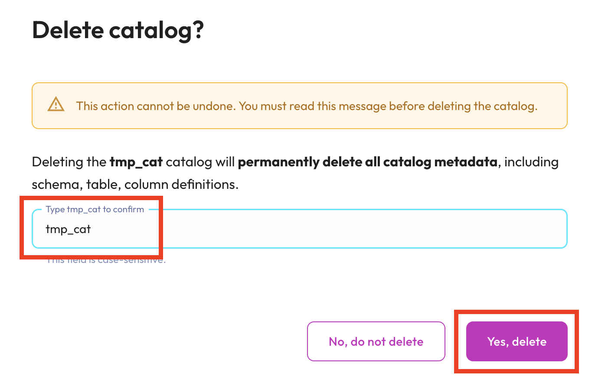
Congratulations, you've completed the Utilizing SQL-based AI functions with Starburst tutorial!
Check out some of these codelabs...